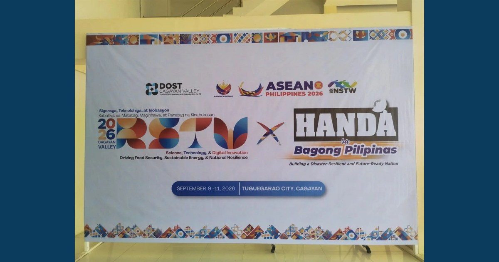

From Innovation to Opportunity: Advancing Ideas for Possible Funding

Faculty delegates from MCNP and ISAP participated in the 2026 Cagayan Valley Regional Science, Technology, and Innovation Week, held on September 9–11, 2026, in Tuguegarao City. The event provided a valuable platform for learning, collaboration, and the exchange of science- and technology-driven solutions responsive to regional needs.
Read full article